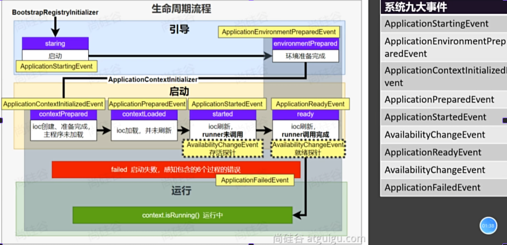

springboot
Springboot 基础
1. Spring Boot的概念、功能
简单来说，Spring Boot 能让你快速创建、配置和运行 Spring 应用，无需手动添加大量 XML 配置或繁琐的依赖管理。以前用 Spring 写 Web 项目，要配 web.xml、Dispatcher Serverlet、Spring 容器……一大堆配置。
现在用 Spring Boot，你只需要：
- 加个
spring-boot-starter-web依赖， - 写个
@SpringBootApplication注解的主类， - 运行
main方法 —— 项目就跑起来了！
2. 场景启动器
Starters are a set of convenient dependency descriptors that you can include in your application. You get a one-stop shop for all the Spring and related technologies that you need without having to hunt through sample code and copy-paste loads of dependency descriptors. For example, if you want to get started using Spring and JPA for database access, include the spring-boot-starter-data-jpa dependency in your project.
启动器是一组方便的依赖项描述符，您可以将其包含在应用程序中。您可以在一个地方获取所有需要的 Spring 及相关技术，而无需在示例代码中搜寻并复制粘贴大量的依赖项描述符。例如，如果您想开始使用 Spring 和 JPA 进行数据库访问，请在项目中包含 spring-boot-starter-data-jpa 依赖项。
The starters contain a lot of the dependencies that you need to get a project up and running quickly and with a consistent, supported set of managed transitive dependencies.
这些启动器包含大量您需要的依赖项，能让您快速启动项目，并且拥有一套一致且受支持的受管传递依赖项。
3. 自动配置
3.1 概念
Spring Boot 自动配置是指：在 Spring 容器启动时，基于项目中添加的依赖（Classpath 里的 Jar 包）和配置，自动将需要的 Bean 对象装配进 IOC 容器，从而实现“约定大于配置”，免去手动编写大量繁琐 XML 或 Java 配置文件的过程。
3.2 核心流程
- 创建项目
- 选择场景启动器
- 场景启动器一导入，就从META-INF/spring.org.springframework.boot.autoconfigure .AutoConfiguration.imports下面导入一堆自动配置类到spring容器中。
- 这些 xxxAutoConfiguration 基于 @Conditional 注解有导入了一堆的组件
- 之后业务就可以使用这些组件了
3.3 DataSourceAutoConfiguration 的导入流程
6. 在使用之前，自动配置类把组件配置到容器中，要做两件事
6.1把属性类和配置文件进行绑定
6.2：把组件要用到的所有属性，也就是这个属性类放到容器中
4. 常用基本功能
1. 属性绑定 @ConfigurationProperties
@Data
@Component
@ConfigurationProperties(prefix = "dog")
public class DogProperties {
private String name; private String age;
private String sex;
}
// 配置文件
dog:
age: 18
name: 旺财
sex: 雄性
2. yaml语法
1. yaml语法都是 key : value
2. 一个对象就是多个 key : value, 也可以用: {name: 小咪, age: 18} 表示
3. 数据可以用[i1, i2, i3]表示,也可以用 - i1, -i2 表示
注:如果同时存在.properties与.yaml,优先使用.properties下的配置
person:
name: 李四
age: 18
birthday: 2019/01/01 00:00:00
like: true
child:
name: 张三
age: 10
birthday: 2018/01/01 00:00:00
dogs:
- name: 旺财
age: 18
- name: 旺财2
age: 18
cats:
cat1:
{name: 小咪, age: 18}
cat2:
{name: 小咪2, age: 18}
3. 自定义banner
通过修改 spring.banner.location=classpath:banner.txt 去自定义bannner
4. 启动 SpringApplication 的其他方法
第一种就是先把 SpringApplication 对象实例化出来,然后调用它的run方法,这样的好处是可以做一些配置.
public static void main(String[] args) {
// 1. 创建SpringApplication对象
SpringApplication app = new SpringApplication(SpringbootDemoApplication.class);
// 2. 配置
app.setBannerMode(Banner.Mode.OFF);
// 3. 启动SpringApplication对象
app.run(args);
}
第二种方法就是通过 SpringApplicationBuilder 来链式启动 Spring 应用.
builder.sources(SpringbootDemoApplication.class)
.bannerMode(Banner.Mode.OFF)
.run(args);
5. 日志
日志系统描述:

5.1 日志的级别
从低到高,越打印,越粗糙.日志的默认级别(info),只会打印日志级别及其以上的日志.
All --> Trace --> DEBUG --> INFO --> WARN --> ERROR --> OFF
logging.level.root=debug
logging.level.xx包的全类名=xx级别
5.2 日志的使用方式
首先，先导入日志的场景启动器
<dependency>
<groupId>org.springframework.boot</groupId>
<artifactId>spring-boot-starter-logging</artifactId>
</dependency>
方法1 : 直接通过日志工厂获得一个工厂类
@SpringBootTest
public class LoggingTest {
// 获得一个日志
Logger logger = LoggerFactory.getLogger(LoggingTest.class);
@Test
public void test01(){
logger.trace("trace...");
logger.debug("debug...");
logger.info("info...");
logger.warn("warn...");
logger.error("error...");
}
}
方法2 : lombok的 @Slf4j 注解会自动注册并注入一个日志类,名字为log,我们直接调log就可以.
@Slf4j
@SpringBootTest
public class LoggingTest {
@Test
public void test01(){
log.trace("trace...");
log.debug("debug...");
log.info("info...");
log.warn("warn...");
log.error("error...");
}
}
5.3 日志分组
日志分组能够更加细粒度的控制不同包,不同类的日志级别,也就是对每一组统一来控制级别
logging.group.group1=全类名1,全类名2,...
5.4 日志输出到文件

5.5 日志归档与滚动切割
Spring Boot 项目中通过 application.yml 或 application.properties 配置 Logback 的日志滚动策略，实现日志文件的自动切割与归档。
| 配置项 | 说明 | 推荐值/示例 |
|---|---|---|
logging.logback.rollingpolicy.clean-history-on-start |
是否在应用启动时清理旧的日志归档文件 | false（建议设为 false，避免误删历史日志） |
logging.logback.rollingpolicy.file-name-pattern |
归档日志文件的命名格式 | app-%d{yyyy-MM-dd}.log（按天切割） |
logging.logback.rollingpolicy.max-file-size |
单个日志文件的最大大小，超过则触发滚动 | 2MB（可根据项目日志量调整） |
logging.logback.rollingpolicy.max-history |
保留归档日志文件的最大天数（或数量） | 7（保留最近7天的日志） |
配置演示:
logging:
logback:
rollingpolicy:
# 是否在应用启动时删除旧的归档日志
clean-history-on-start: false
# 归档日志文件名格式：按日期切割
file-name-pattern: app-%d{yyyy-MM-dd}.log
# 每个日志文件最大 2MB，超过则创建新文件
max-file-size: 2MB
# 最多保留 7 天的历史日志文件
max-history: 7
5.6 引入日志框架自己的配置文件
<?xml version="1.0" encoding="UTF-8"?>
<configuration>
<contextName>logback</contextName>
<!-- 日志的输出目录 -->
<property name="log.path" value="D://work//tingshu_work//logs" />
<!--控制台日志格式：彩色日志-->
<!-- magenta:洋红 -->
<!-- boldMagenta:粗红-->
<!-- cyan:青色 -->
<!-- white:白色 -->
<!-- magenta:洋红 -->
<property name="CONSOLE_LOG_PATTERN"
value="%yellow(%date{yyyy-MM-dd HH:mm:ss}) %highlight([%-5level]) %green(%logger) %msg%n"/>
<!--文件日志格式-->
<property name="FILE_LOG_PATTERN"
value="%date{yyyy-MM-dd HH:mm:ss} [%-5level] %thread %file:%line %logger %msg%n" />
<!--编码-->
<property name="ENCODING" value="UTF-8" />
<!-- 控制台日志 -->
<appender name="CONSOLE" class="ch.qos.logback.core.ConsoleAppender">
<!-- 临界值过滤器 -->
<filter class="ch.qos.logback.classic.filter.ThresholdFilter">
<level>INFO</level>
</filter> <encoder> <pattern>${CONSOLE_LOG_PATTERN}</pattern>
<charset>${ENCODING}</charset>
</encoder> </appender>
<!-- 文件日志 -->
<appender name="FILE" class="ch.qos.logback.core.FileAppender">
<file>${log.path}//log.log</file>
<append>true</append>
<encoder> <pattern>%date{yyyy-MM-dd HH:mm:ss} %msg%n</pattern>
<charset>${ENCODING}</charset>
</encoder> </appender>
<!-- logstash日志 -->
<!-- <appender name="LOGSTASH" class="net.logstash.logback.appender.LogstashTcpSocketAppender">-->
<!-- <!– logstash ip和暴露的端口，logback就是通过这个地址把日志发送给logstash –>-->
<!-- <destination>139.198.127.41:8044</destination>-->
<!-- <encoder charset="UTF-8" class="net.logstash.logback.encoder.LogstashEncoder" />-->
<!-- </appender>-->
<!-- 开发环境 -->
<springProfile name="dev">
<!-- com.atguigu日志记录器：业务程序INFO级别 -->
<logger name="com.atguigu" level="INFO" />
<!-- 根日志记录器：INFO级别 -->
<root level="INFO">
<appender-ref ref="CONSOLE" />
<!-- <appender-ref ref="FILE" />-->
</root>
</springProfile>
</configuration>
5.7 总结
在我们使用日志时,步骤可以总结为下: 1. 如果不需要切换底层日志框架logback,就可以直接去写配置文件了,包括日志级别 2. 记录日志:在合适的时间,合适的级别记录日志就可以了 --> log.info|log.debug
Spring Boot 的进阶使用
1. Profiles 环境隔离
为项目设立多个环境（如开发 dev、测试 test、生产 prod），实现不同环境下配置的快速切换。
实现流程:
-
定义不同环境：创建特定于环境的配置文件，命名格式为 application-{profile}.properties 或 application-{profile}.yml。
- application-dev.yml(开发环境)
- application-test.yml(测试环境)
- application-prod.yml(生产环境
-
指定环境特定的配置：在 application-{profile}.yml 文件中，配置该环境下特有的属性（如数据库连接、日志级别、服务地址等）。可以在这些文件中定义或覆盖在主配置文件中声明的Bean。
-
激活指定环境：在主配置文件 application.yml (或 application.properties) 中，通过 spring.profiles.active 属性来激活某个环境。
spring:
profiles:
active: dev # 激活开发环境配置
-
命令行：java -jar myapp.jar --spring.profiles.active=prod
-
环境变量：SPRING_PROFILES_ACTIVE=prod
2. 单元测试
2.1 一些常用的方法
✅ 提示：优先使用 @DisplayName 提升测试可读性；合理使用 @Tag 实现测试分组。
| 注解 | 说明 |
|---|---|
@Test |
标记为测试方法 |
@ParameterizedTest |
支持参数化测试 |
@RepeatedTest |
方法可重复执行指定次数 |
@DisplayName |
设置测试类或方法的展示名称 |
@BeforeEach |
每个测试前执行（如初始化） |
@AfterEach |
每个测试后执行（如清理资源） |
@BeforeAll |
所有测试前执行一次（需 static） |
@AfterAll |
所有测试后执行一次（需 static） |
@Tag |
为测试打标签，用于分类筛选 |
@Disabled |
跳过该测试（类似 @Ignore） |
@Timeout |
设置超时时间，超过则失败 |
@ExtendWith |
引入扩展类，支持自定义行为 |
2.2 断言机制
断言用于验证测试结果是否符合预期，是单元测试的核心。
1. 常用断言方法（org.junit.jupiter.api.Assertions）
| 方法 | 说明 |
|---|---|
assertEquals(expected, actual) |
检查两值是否相等 |
assertNotEquals(unexpected, actual) |
检查两值是否不相等 |
assertTrue(condition) |
检查条件是否为真 |
assertFalse(condition) |
检查条件是否为假 |
assertNull(object) |
检查对象是否为 null |
assertNotNull(object) |
检查对象是否不为 null |
assertArrayEquals(expectedArray, actualArray) |
检查数组是否相等 |
assertThrows(Exception.class, () -> { ... }) |
验证是否抛出指定异常 |
assertTimeout(Duration.ofSeconds(1), () -> { ... }) |
验证代码块是否在规定时间内执行 |
assertAll("group", () -> { ... }) |
分组断言，可执行多个断言并收集所有失败信息 |
2. 高级特性
-
消息延迟加载：
assertEquals(expected, actual, () -> "自定义错误信息")
只有断言失败时才会生成消息，提升性能。 -
分组断言（Grouped Assertions）：
assertAll("用户信息校验", () -> assertEquals("Tom", user.getName()), () -> assertEquals(25, user.getAge()), () -> assertNotNull(user.getId())
3. Actuator
通过导入 spring-boot-starter-actuator 场景启动器，可以轻松监控和管理 Spring Boot 应用的运行状态。
3.1 功能
- 提供生产级的监控端点（endpoints），用于观测应用健康、指标、环境等信息。
- 支持与外部系统集成（如 Prometheus、Grafana、Zipkin 等）。
3.2 使用步骤
- 添加依赖（Maven）
<dependency> <groupId>org.springframework.boot</groupId> <artifactId>spring-boot-starter-actuator</artifactId> </dependency> - 访问内置端点：http://localhost:8080/actuator/{endpoint}
-
启用与暴露端点
management: endpoints: web: exposure: include: '*' # 暴露所有端点（生产慎用） # include: health,info # 推荐：仅暴露必要端点 endpoint: health: show-details: always # 显示健康详情 -
自定义
info端点info: app: name: MyApp version: 1.0.0 author: Alice
4. 生命周期 -- 监听器感知生命周期

@Slf4j
public class MyListener implements SpringApplicationRunListener {
@Override
public void starting(ConfigurableBootstrapContext bootstrapContext) {
log.info("starting");
}
@Override
public void environmentPrepared(ConfigurableBootstrapContext bootstrapContext, ConfigurableEnvironment environment) {
log.info("environmentPrepared");
}
@Override
public void contextPrepared(ConfigurableApplicationContext context) {
log.info("contextPrepared");
}
@Override
public void contextLoaded(ConfigurableApplicationContext context) {
log.info("contextLoaded");
}
@Override
public void started(ConfigurableApplicationContext context, Duration timeTaken) {
log.info("started");
}
@Override
public void ready(ConfigurableApplicationContext context, Duration timeTaken) {
log.info("ready");
}
@Override
public void failed(ConfigurableApplicationContext context, Throwable exception) {
log.info("failed");
}
}
4.1 生命周期-事件
Spring Boot 提供了完整的生命周期管理机制，通过监听器（Listener）可以感知应用启动和关闭的关键阶段。
1) 如果项目启动前做事： BootstrapRegistryInitializer和ApplicationContextInitializer 2) 如果想要在项目启动完成后做事：ApplicationRunner和CommandLineRunner 3) 如果要干涉生命周期做事：SpringApplicationRunListener 4) 如果想要用事件机制：ApplicationListener

什么是基于事件驱动开发：事件驱动开发（Event-Driven Development） 是一种编程范式，其核心思想是：系统的行为由事件的产生和响应来驱动。当某个特定事件发生时，系统会自动触发预先注册的监听器或处理器进行处理。
事件驱动开发的流程： 1. 自定义事件：继承 ApplicationEvent，携带响应得业务数据 2. 根据特定业务发布事件 publisher.publishEvent() 3. 系统中预先定义的事件监听器(@EventListener)就会监听事件，然后对这个事件做出响应 4. 之后，就可以自己设定是同步还是异步处理（@Async,同时记得开启异步处理)
实现方式：注解形式
@Component
public class MyEventMonitor {
@EventListener
public void handleReady(ApplicationReadyEvent event) {
System.out.println("✅ 应用启动完成！");
}
@EventListener
public void handleStart(ApplicationStartedEvent event) {
System.out.println("🚀 应用已启动，正在执行 Runner...");
}
}
实现方式：接口形式
@Component
public class MyEventListener implements ApplicationListener<ApplicationReadyEvent> {
@Override
public void onApplicationEvent(ApplicationReadyEvent event) {
System.out.println("应用已就绪，开始处理请求...");
}
}
代码演示：传统开发方式--同步阻塞开发
@Slf4j
@RestController
public class UserController {
// 传统开发方式
// 注入一堆service,然后去调方法
@Autowired
UserPointsService userPointsService;
@Autowired
CouponService couponService;
@GetMapping("/login")
public void afterLogin(String username){
//1. 登录成功
log.info("登录成功");
//2. 给用户发送优惠券
couponService.sendCoupon(username);
//3. 给用户发积分
userPointsService.addUserPoints(username);
}
}
代码演示：事件驱动开发方式 (回头看, 有了 rmq, 根本用不上这个, 再不济, redis 也能搞这些)
// 事件驱动开发方式
----------------------------------userController--------------------------------
@Autowired
ApplicationEventPublisher applicationEventPublisher;
@GetMapping("/login")
public void afterLogin(String username){
// 1. 登录成功
log.info("登录成功");
// 2. 发送登录成功事件
applicationEventPublisher.publishEvent(new UserLoginSuccessEvent(this, username));
}
---------------------------------CouponService--------------------------------
@Slf4j
@Service
@EnableAsync
public class CouponService {
@Async
@EventListener(UserLoginSuccessEvent.class)
public void listener(UserLoginSuccessEvent event){
sendCoupon(event.getUsername());
}
public void sendCoupon(String userName){
log.info("给用户{}发送优惠券",userName);
}
}
-----------------------------------UserPointsService------------------------------
@Slf4j
@Service
@EnableAsync
public class UserPointsService {
@Async
@EventListener(UserLoginSuccessEvent.class)
void listener(UserLoginSuccessEvent event){
addUserPoints(event.getUsername());
}
// 添加积分
public void addUserPoints(String username){
log.info("用户：{} 添加积分", username);
}
}